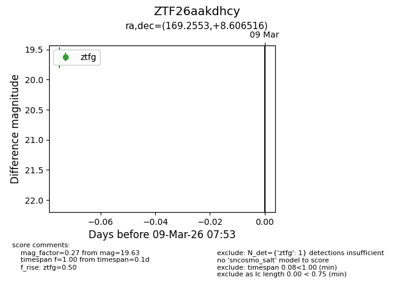
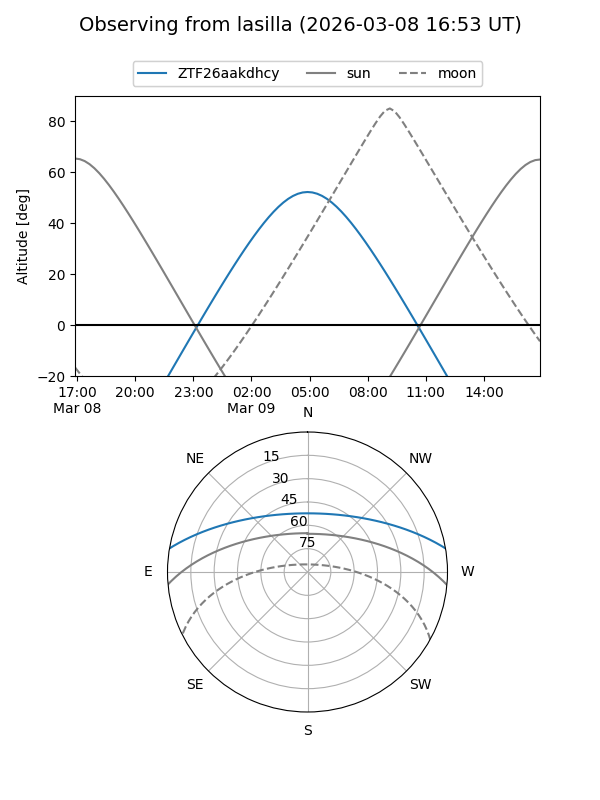
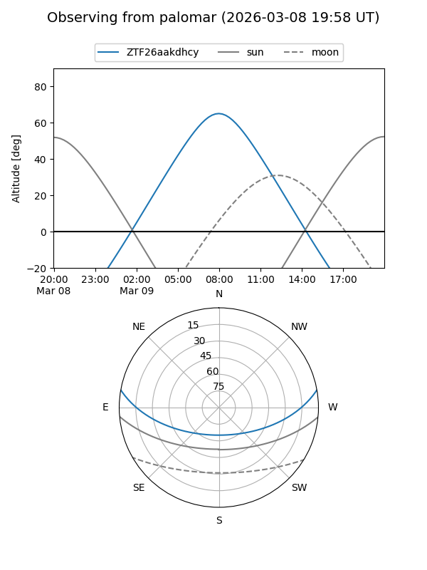

ZTF26aakdhcy
Target ZTF26aakdhcy at 2026-03-09 07:54
Aliases and brokers:
FINK: link
Lasair: link
ALeRCE: link
alt names
ZTF26aakdhcy (ztf,fink_ztf)
Coordinates:
equatorial (ra, dec) = 169.2553,+8.60652
equatorial (HMS+DMS) = 11:17:01.28,+08:36:23.46
galactic (l, b) = (248.1959,+60.99527)
Flags:
Photometry:
last ztfg=19.63
1 ztfg detections
Lightcurve

Visibility


Additional plots